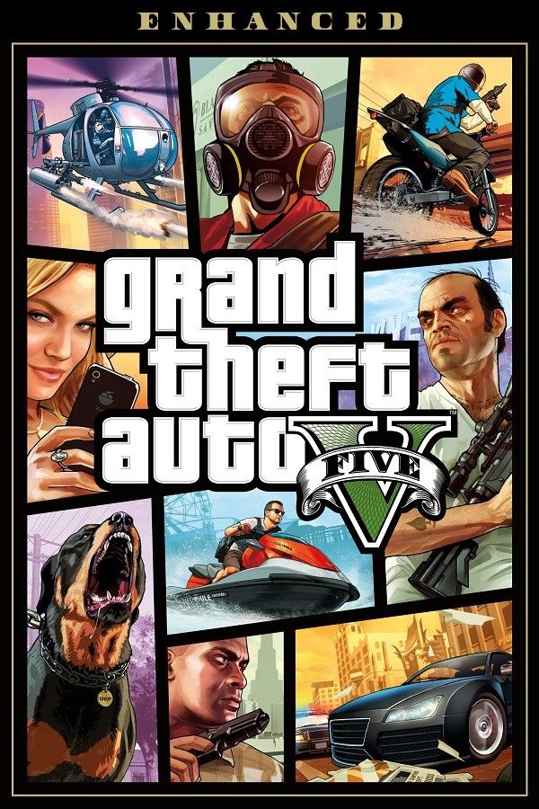
Bienvenidos a Los Santos
Lanzamiento Oficial: 17 de Septiembre de 2013
Desarrolladora Principal: Rockstar North
Distribuidora: Rockstar Games
Ciudad Inspirada: Los Santos (Los Ángeles, California)
La Trama de Los Santos
Grand Theft Auto V ofrece un gigantesco mundo abierto ambientado en el ficticio estado de San Andreas. La narrative se centra en las caóticas vidas de tres criminales muy particulares cuyas historias se entrelazan de forma magistral. A diferencia de entregas anteriores, el jugador puede alternar libremente entre los tres protagonistas en casi cualquier momento fuera de las misiones.
La trama arranca cuando el destino une a un estafador callejero que busca ascender en el escalafón criminal, un célebre exladrón de bancos cuyo retiro es mucho menos idílico de lo que esperaba, y un sociópata inestable obsesionado con los negocios turbios a gran escala. Juntos, se verán obligados a ejecutar una serie de atrevidos y letales atracos para asegurar su supervivencia en una ciudad despiadada y consumida por la codicia mediática.
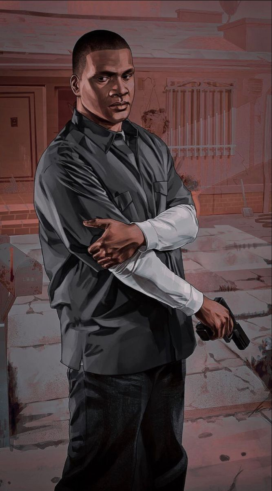
Franklin Clinton
Habilidad Especial: Ralentizar el tiempo mientras conduce cualquier vehículo terrestre.
Franklin es un joven y ambicioso estafador de autos nacido y criado en el conflictivo sur de Los Santos. Trabaja inicialmente para un concesionario de lujo armenio bastante fraudulento, embargando vehículos a personas que no pueden pagar las altas cuotas de financiación.
Buscando dejar atrás la precaria vida de las pandillas callejeras y la constante presión de su amigo Lamar Davis, Franklin cruza caminos con Michael De Santa durante un trabajo de embargo. Al ver el enorme potencial, la madurez y la destreza del joven al volante, Michael decide adoptarlo como su protegido y mano derecha, arrastrándolo formalmente al mundo de los robos de alta gama.
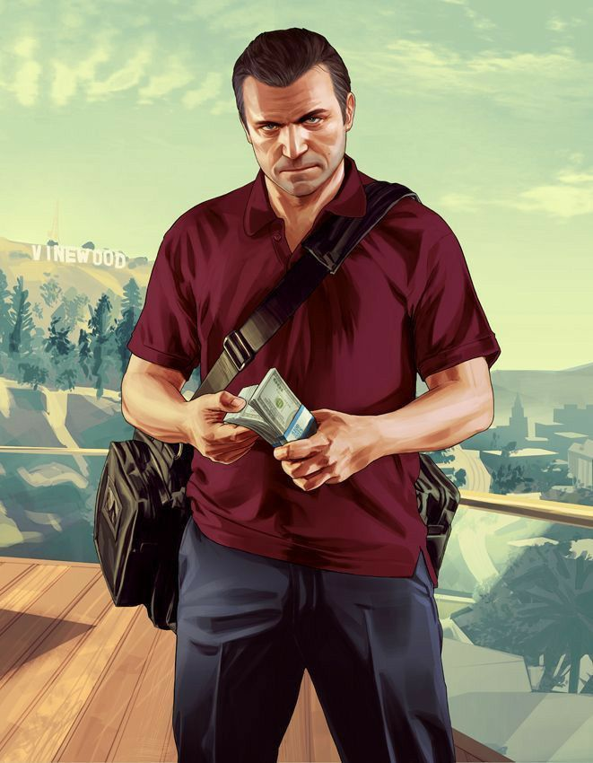
Michael De Santa
Habilidad Especial: Entrar en un estado de "Bullet Time" para apuntar con precisión letal en tiroteos.
Nacido bajo el nombre de Michael Townley, es un exladrón de bancos legendario que supuestamente falleció en un asalto fallido en Ludendorff en 2004. Tras pactar un trato secreto y sumamente lucrativo con la agencia federal FIB, ingresó al programa de protección de testigos bajo el apellido De Santa.
Actualmente reside en una lujosa e imponente mansión en Rockford Hills, rodeado de una familia disfuncional que lo detesta: una esposa infiel que derrocha su dinero y dos hijos adolescentes con serios problemas de conducta. Atrapado por el aburrimiento crónico y una fuerte crisis existencial, un incidente imprevisto lo obliga a romper su retiro y regresar al único negocio que realmente conoce y domina a la perfección: el crimen organizado.
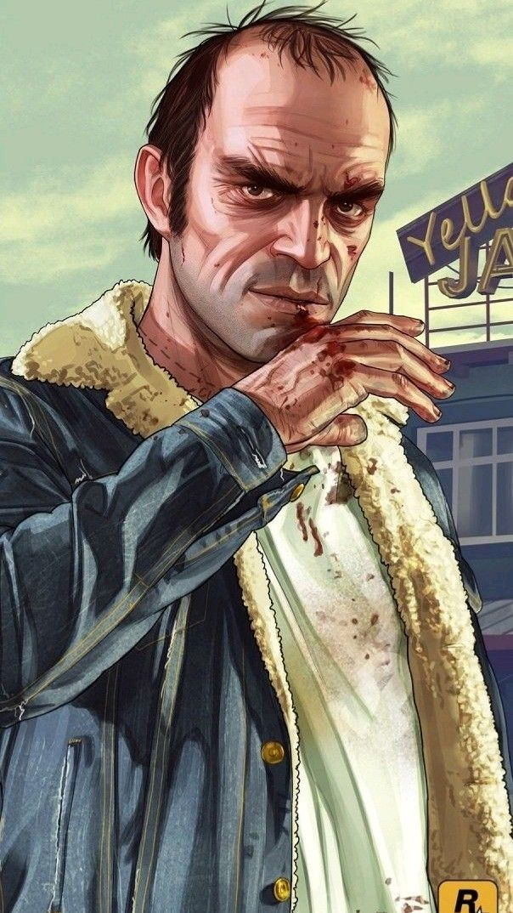
Trevor Philips
Habilidad Especial: Modo Ira (recibe la mitad de daño e infringe el doble de daño físico en combate).
Trevor es un antiguo piloto militar canadiense reconvertido en un sociópata errático, violento e impredecible. Fue el mejor amigo y socio criminal de Michael Townley durante sus años de gloria en el mundo de los atracos, quedando profundamente traumático tras creer que su compañero había muerto en el norte.
Actualmente opera desde un remolque descuidado en la zona marginal de Sandy Shores, en pleno desierto de Blaine County. Allí lidera su propia organización criminal independiente dedicada a la fabricación clandestina de estupefacientes y al contrabando internacional de armamento pesado. Su personalidad psicópata, combinada con su absoluta falta de miedo, lo convierte en una de las fuerzas más destructivas y temidas de todo San Andreas.
Galería
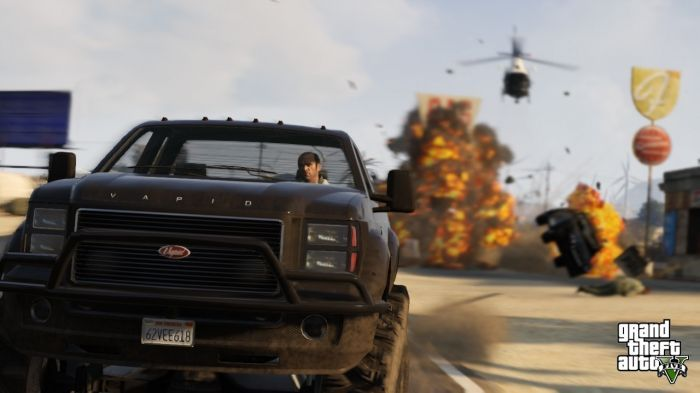
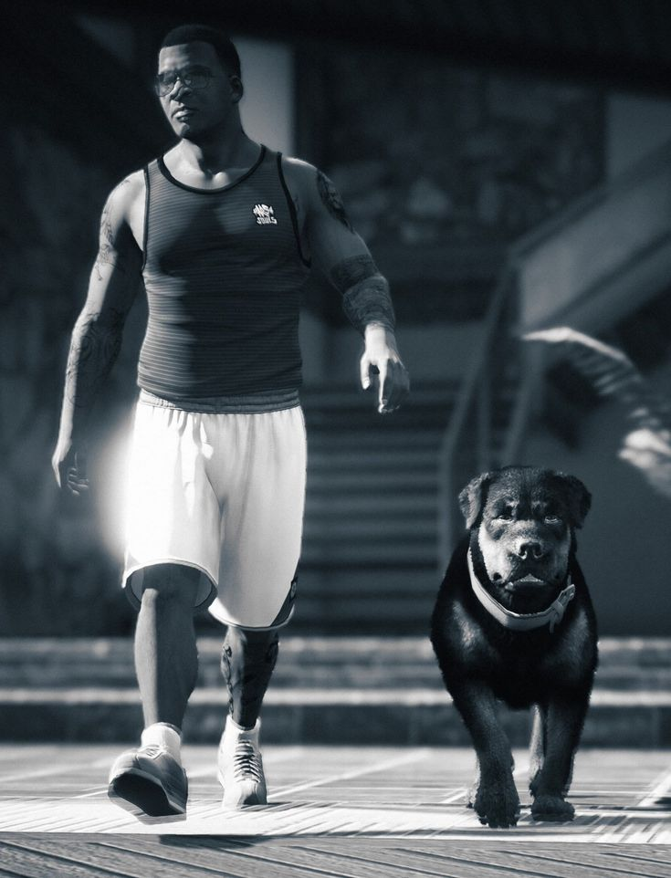
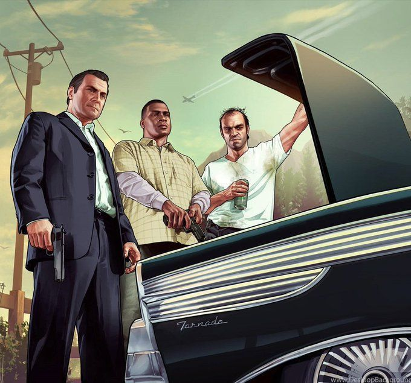
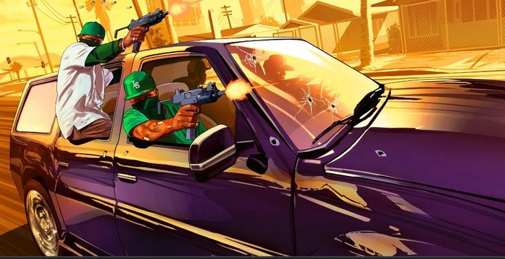
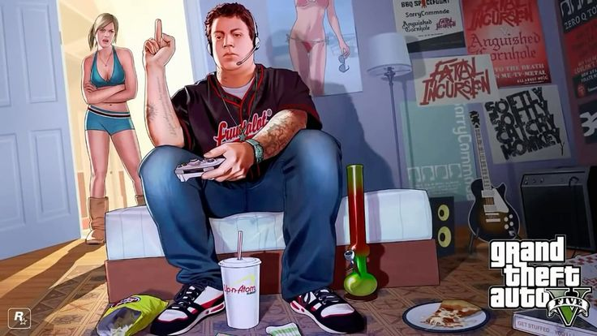
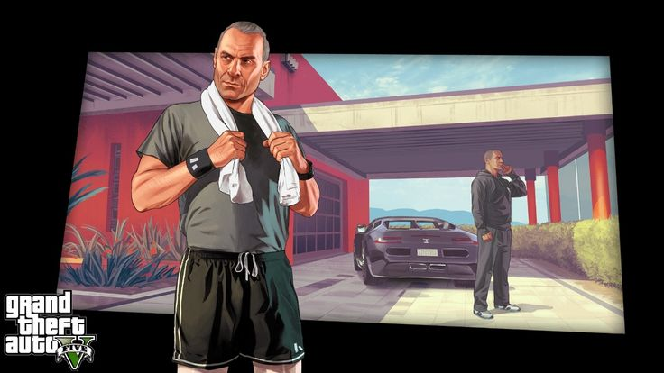
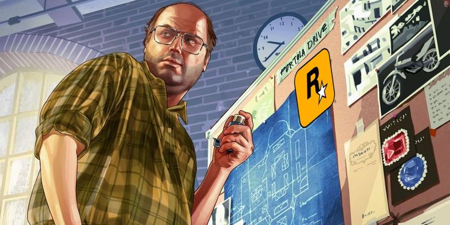
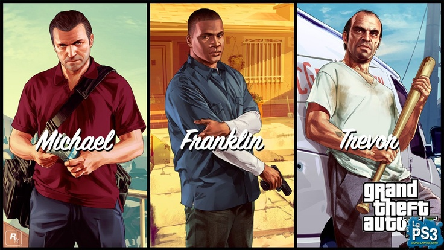
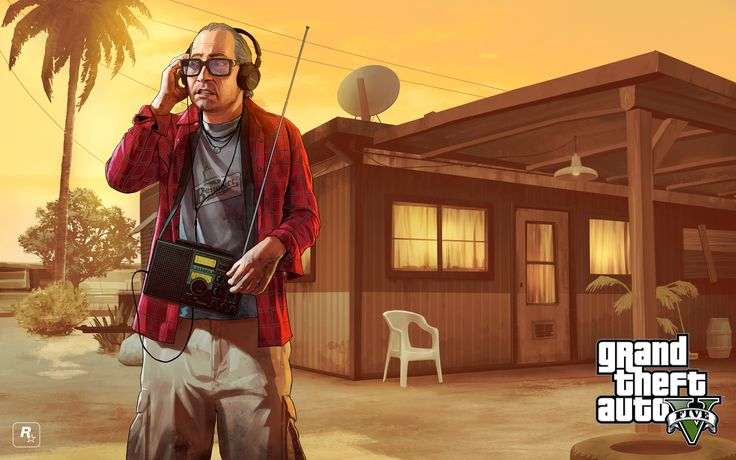
Quiénes Somos
Un proyecto dedicado a la enciclopedia de Grand Theft Auto V hecho por fans.